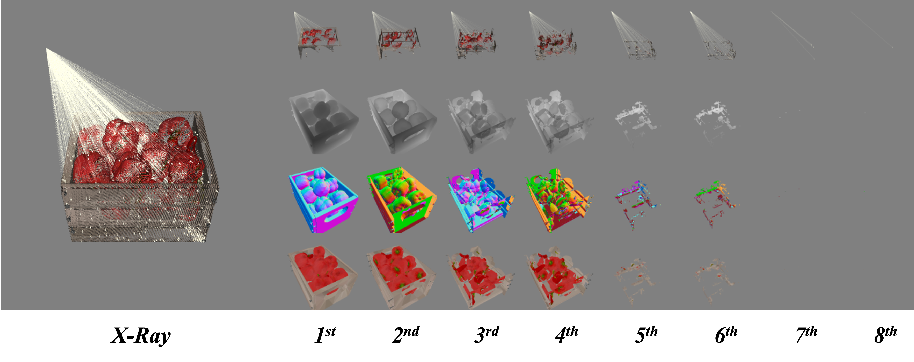
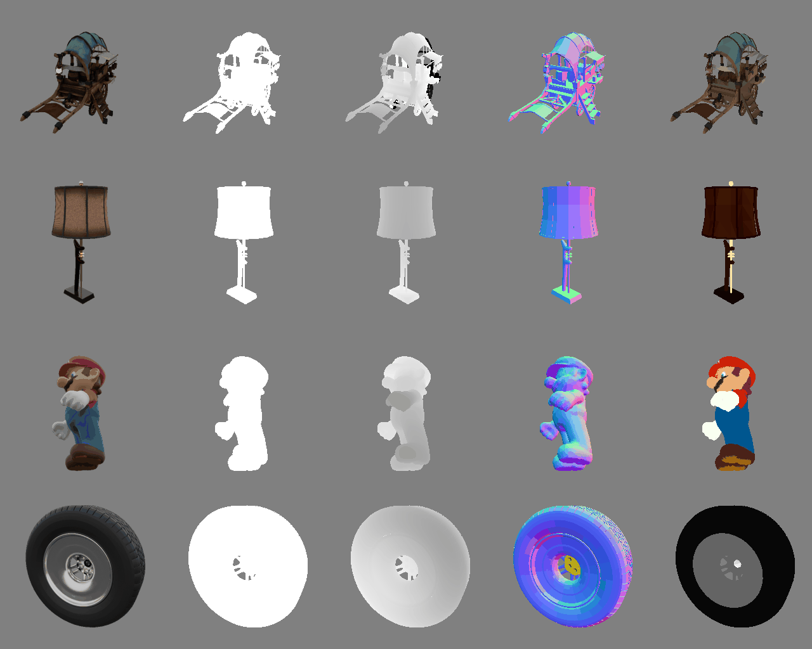
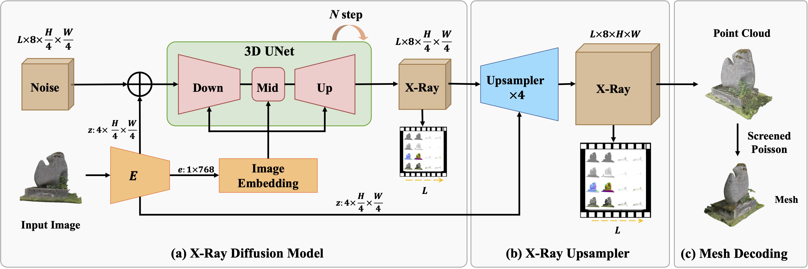

X-Ray: A Sequential 3D Representation for Generation
Arxiv 2024
Tao Hu1, Wenhang Ge2*, Yuyang Zhao1*, Gim Hee Lee1
1 National University of Singapore 2 HKUST(GZ)
* These authors contributed equally to this work.

Abstract
In this paper, we introduce X-Ray, an innovative approach to 3D generation that employs a new sequential representation, drawing inspiration from the depth-revealing capabilities of X-Ray scans to meticulously capture both the external and internal features of objects. Central to our method is the utilization of ray casting techniques originating from the camera's viewpoint, meticulously recording the geometric and textural details encountered across all intersected surfaces. This process efficiently condenses complete objects or scenes into a multi-frame format, just like videos. Such a structure ensures the 3D representation is composed solely of critical surface information. Highlighting the practicality and adaptability of our X-Ray representation, we showcase its utility in synthesizing 3D objects, employing a network architecture akin to that used in video diffusion models. The outcomes reveal our representation's superior performance in enhancing both the accuracy and efficiency of 3D synthesis, heralding new directions for ongoing research and practical implementations in the field.
Samples of X-Ray
Fig. 1. Samples of our proposed X-Ray Representation. The first row displays the raw 3D objects to be converted. The second row illustrates the images rendered from random camera perspectives. Subsequent rows reveal the hit H, depth D, normal N, and color C Maps of X-Ray from the 1st to the 8th layer. It is important to note that the number of layers in an arbitrary X-Ray is not fixed, indicating various complexity of 3D objects.
X-Ray (Ours) VS. Rendering-based Synthesis

Input Image
TripoSR
X-Ray(Ours)
Fig. 2. Comparison between our the proposed X-Ray with the rendering-based 3D synthesis. The former usually focus on the visible surface within camera view, while ours can sense all the visible and invisible surfaces thus can generate 3D object with both outside and inside shape and appearance.
Synthesis Pipeline of X-Ray
Fig. 3. Overview of the 3D Generator for our proposed X-Ray. In the first stage, the diffusion model synthesizes a low-resolution X-Ray from random noise with text or image as condition. During the second stage, we adopt a Spatial-Temporal Upsampler to generate high-quality X-Ray. Finally, X-Ray can be directly converted to 3D Mesh via the decoding process.
Image-to-3D
Input Image
Synthesized X-Ray
Encoded Point Cloud
Decoded Mesh

Text-to-3D
Input Prompt
Synthesized X-Ray
Encoded Point Cloud
Decoded Mesh
power supply"
Citation
@article{X-Ray,
title={X-Ray: A Sequential 3D Representation for Generation},
author={Tao Hu, Wenhang Ge, Yuyang Zhao, Gim Hee Lee},
journal={arXiv preprint arXiv: 2404.14329v1},
year={2024}}